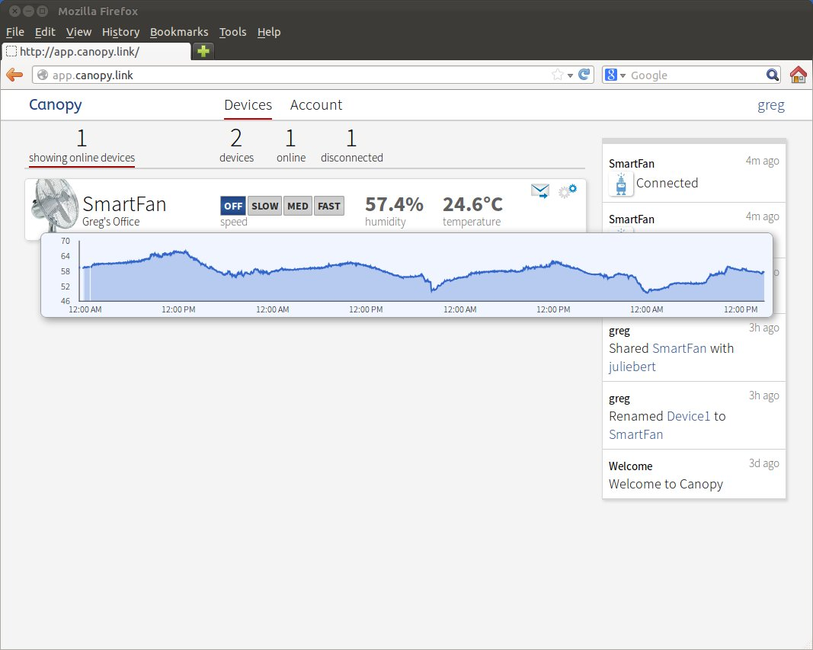

Guide: Install Canopy Web Manager
The
Canopy Web Manager is a web-based user interface for managing
Canopy-enabled devices:

The
Canopy Web Manager is easy to install because it
consists entirely of Javascript (.js) and HTML (.html) files.
Step 1: Prerequisites
You must first have a running
Canopy Cloud Service server. If you
haven't done so already, follow these guides to get
Canopy Cloud
Service up and running:
Step 2: Get the Source
The
Canopy Web Manager is built using our
Canopy Javascript
Client Library. You must clone both repos:
git clone https://github.com/canopy-project/canopy-js-client
git clone https://github.com/canopy-project/canopy-app
Step 3: Configure the Canopy Web Manager
In the
canopy-app/
directory create a file called
canoweb.conf.js
. Copy the following text into this
file and then make any appropriate changes:
/* Canopy Web Application Configuration File.
*
* DO NOT COMMIT THIS FILE TO GIT.
* This file differs for each deployment of the Canopy Web Application.
*/
var gCanopyWebAppConfiguration = {
autoRefresh: true,
cloudHost : "54.68.36.105",
cloudHTTPPort : 80,
cloudUseHTTPS : false,
javascriptClientURL: "/canopy-js-client/canopy_client.js"
};
The only change you should need to make is to the
cloudHost
setting. Set it to the IP address or hostname
of your server.
Step 4: Enable Web Manager in the Canopy Cloud Service
Using the text editor of your choice, edit the file
/etc/canopy/ccs-env.sh
.
sudo vim /etc/canopy/ccs-env.sh
.
Add the following lines:
CCS_WEB_MANAGER_PATH=/home/ubuntu/canopy-app
CCS_JS_CLIENT_PATH=/home/ubuntu/canopy-js-client
.
Step 5: Restart the Canopy Cloud Service
Run:
sudo /etc/init.d/canopy-cloud-service restart
Now in your browser go to:
http://<ip-address-or-hostname>/mgr
If everything worked, you should see a login page.